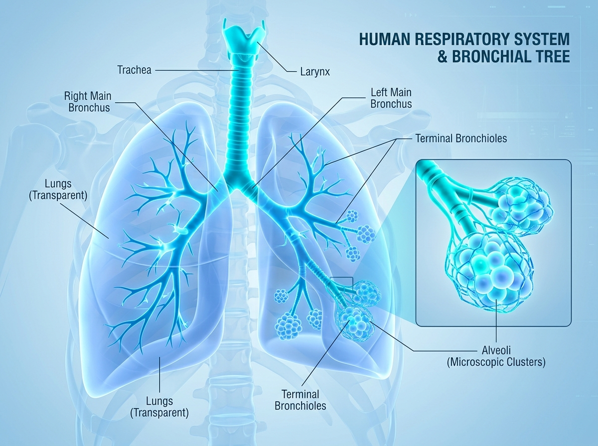
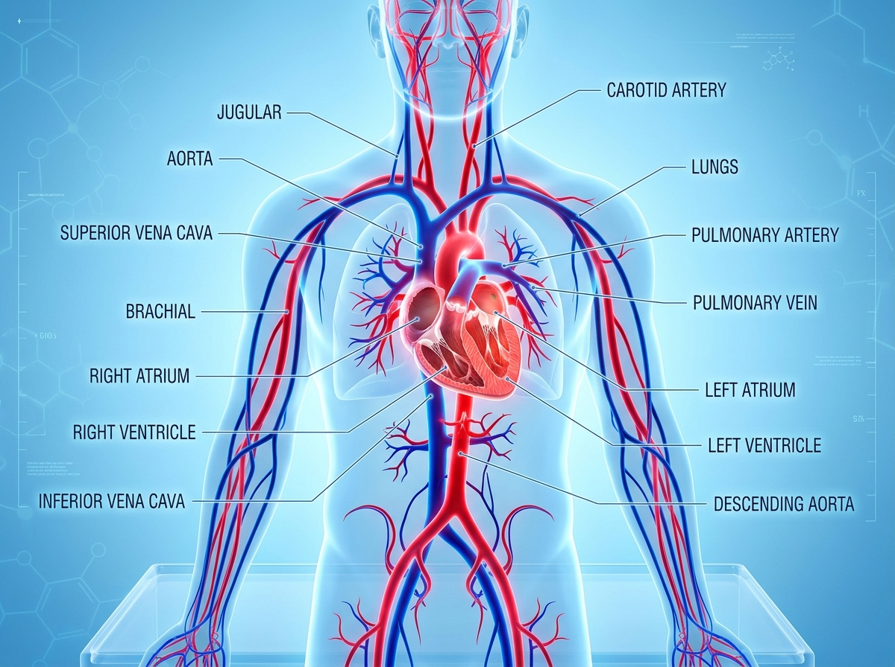
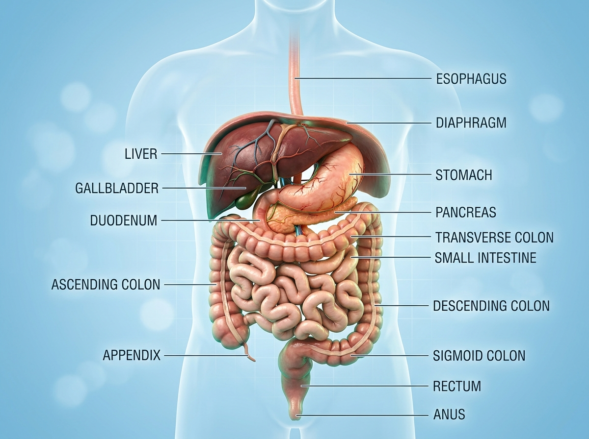
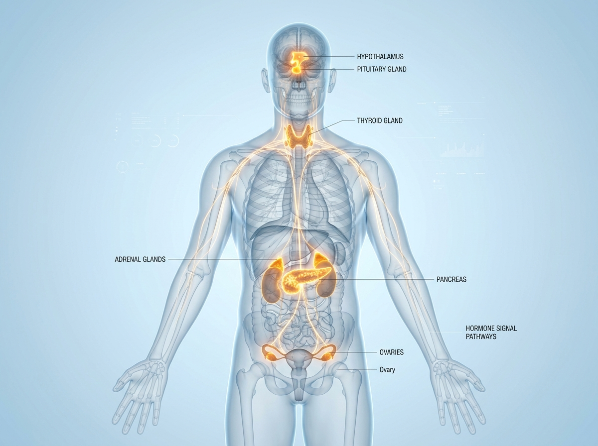
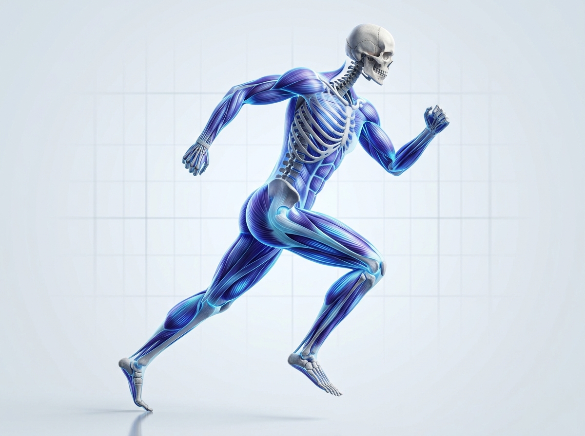

呼吸系統：氣體交換的生命門戶
每分鐘進行 12~20 次無意識呼吸，為 37 兆細胞源源不絕地提供氧氣，並排出二氧化碳代謝產物。

核心構造與生理機制
空氣自鼻腔與喉部進入，經過氣管向下分流至左右主支氣管，最終深入如樹冠般分岔的 23 級細支氣管網絡，抵達微觀肺泡進行氣體擴散。
氣管與喉 (Trachea & Larynx)
具 16-20 個 C 型透明軟骨環防止管道塌陷，內襯纖毛上皮分泌黏液捕捉並向上推送微塵與病原體。
支氣管樹 (Bronchial Tree)
多達 23 代分枝，終末細支氣管直徑小於 0.5 毫米，平滑肌受自主神經調節控制氣道阻力。
肺泡微型叢 (Alveoli)
雙肺擁有約 3 至 5 億個微型氣囊，總擴散面積達 70-100 平方公尺，外層緊密包覆毛細血管網。
橫膈膜與肋間肌 (Diaphragm)
主要呼吸肌，收縮時下移擴大胸腔體積，形成負壓將空氣吸入肺部；舒張時氣體自然排出。
氣體交換三步驟流程
橫膈膜收縮下移，胸腔擴張產生負壓吸入空氣
氧氣跨越單層細胞壁進入血液，CO₂ 擴散回肺泡
血紅素結合氧分子，隨動脈循環運送至全身各組織
II 型肺泡上皮細胞分泌的磷脂蛋白質能顯著降低表面張力，防止呼氣時肺泡微氣囊塌陷黏合，是呼吸生理中不可或缺的物理保護機制。
循環系統：全身養分與氧氣的高速網絡
以四腔室肌肉心臟為動力心臟泵，推動血液日夜流淌於 10 萬公里血管網路，支撐細胞代謝需求。

核心構造與生理機制
人體心血管系統包含體循環（Systemic Circulation）與肺循環（Pulmonary Circulation）。心臟以每分鐘約 5 公升的輸出量，精準供給全身各器官氧氣與養分。
四腔室心臟 (Heart 4-Chambers)
右心房/室負責接收缺氧血並泵向肺部；左心室肌肉壁最厚（約 1.5 cm），產生強大收縮壓將充氧血泵入全身。
主動脈與動脈系統 (Aorta & Arteries)
具備豐富彈性纖維與平滑肌，能承受收縮期高壓（120 mmHg）並藉由彈性回縮維持舒張期血流平穩前進。
靜脈與瓣膜 (Veins & Valves)
血壓較低，血管壁較薄。四肢靜脈內建單向半月瓣膜，配合周圍骨骼肌收縮（肌肉泵作用）抵抗重力將血液推回心臟。
毛細血管網 (Capillary Network)
管徑僅 5~10 微米（僅容單顆紅血球通過），單層內皮細胞構成，為組織細胞進行氧氣、養分及代謝物交換的場所。
雙循環循環路徑
右心室 → 肺動脈 → 肺毛細血管（排出 CO₂，吸收 O₂） → 肺靜脈 → 左心房
左心室 → 主動脈 → 各器官分支動脈 → 組織毛細血管釋放氧氣與養分
上下腔靜脈 → 右心房；肝門靜脈將消化道養分送往肝臟代謝與解毒
心臟擁有獨立的自律性起搏點——竇房結（位於右心房壁），每分鐘自動發送 60-100 次電脈衝，經房室結（AV Node）與希氏束精確協調心房與心室的節律收縮。
消化系統：能量與營養分子的轉化精煉廠
從食物入口至分子級吸收，消化道長達 9 公尺，結合機械性研磨與多重酵素化學分解。

核心構造與生理機制
食物歷經口腔咀嚼、胃部強酸研磨、十二指腸酵素催化，並在小腸長達數百萬條絨毛表面進行高效主動運輸與被動吸收。
胃與胃酸分泌 (Stomach & Gastric Acid)
分泌鹽酸（pH 1.5-2.0）殺滅細菌並活化胃蛋白酶，強力三層平滑肌收縮將固體食物研磨為食糜（Chyme）。
肝臟與膽囊 (Liver & Gallbladder)
人體最大化學工廠，負責合成膽汁乳化脂質、儲存肝醣、合成血漿蛋白及解毒外來代謝物。
胰臟外分泌腺 (Pancreas Exocrine)
每日分泌約 1.5 公升胰液，富含碳酸氫鈉中和胃酸，並提供胰澱粉酶、胰蛋白酶與胰脂酶催化消化。
小腸與大腸 (Small & Large Intestine)
小腸微絨毛使表面積擴增至 250 平方公尺，完成 90% 養分吸收；大腸則回收水分並由數兆共生菌群合成維生素 K 與 B 群。
養分分解吸收途徑
胃部蠕動研磨，胃蛋白酶分解大分子蛋白質為多胜肽
胰液與膽汁混合，單醣、胺基酸進入微血管，脂肪酸進入乳糜管
大腸吸收剩餘水分與電解質，腸道益菌發酵纖維生成短鏈脂肪酸
腸道被醫學界稱為「第二大腦」，擁有超過 5 億個神經元組成的腸神經系統（ENS）。全身超過 90% 的血清素（Serotonin，快樂荷爾蒙）在腸道合成，並透過迷走神經與大腦維持密切雙向反饋。
內分泌系統：無形的化學調控與動態恆定
透過血液輸送極微量的荷爾蒙分子，精準調控新陳代謝、生長發育、壓力反應與生殖機能。

核心構造與生理機制
內分泌腺體屬於無導管腺體（Ductless Glands），荷爾蒙直接釋放進入周圍毛細血管，隨血液循環靶向作用於帶有專一受體（Receptors）的目標細胞。
下視丘與腦垂腺 (Hypothalamus & Pituitary)
內分泌系統的「主控指揮中心」，下視丘整合神經訊號，釋放促釋素指揮腦垂腺分泌生長激素 (GH)、促甲狀腺素 (TSH) 等。
甲狀腺與副甲狀腺 (Thyroid & Parathyroid)
分泌甲狀腺素 (T3/T4) 控制全身細胞基礎代謝率與體溫；副甲狀腺素 (PTH) 則精確維持血液中鈣離子濃度平衡。
腎上腺皮質與髓質 (Adrenal Glands)
皮質分泌皮質醇（抗壓力與調節免疫）與醛固酮；髓質分泌腎上腺素與正腎上腺素，啟動應激戰鬥逃跑反應 (Fight or Flight)。
胰島細胞群 (Islets of Langerhans)
β 細胞分泌胰島素 (Insulin) 促進細胞吸收葡萄糖降低血糖；α 細胞分泌升糖素 (Glucagon) 促使肝醣分解提升血糖。
荷爾蒙負回饋調控機制
體內外環境變化刺激下視丘釋放促釋素，驅動腦垂腺分泌促激素
目標腺體（如甲狀腺、腎上腺）受刺激產生最終荷爾蒙進入血流
血液中荷爾蒙濃度升高時，自動反向抑制下視丘與腦垂腺，維持精準恆定
即使外界環境劇烈變動（氣溫驟降、劇烈運動或斷食），內分泌系統透過微摩爾級別 (picomolar) 的荷爾蒙濃度微調，使體溫維持在 37°C、血糖維持在 70-99 mg/dL、體液 pH 維持在 7.35-7.45 的黃金區間。
骨骼肌肉系統：結構支撐與生物力學協同
206 塊堅固骨骼、600+ 條肌肉與緻密關節韌帶，構成強韌且敏捷的力學槓桿運動系統。

核心構造與生理機制
骨骼提供抗壓支撐與造血功能，肌肉提供主動收縮牽引力，關節與肌腱作為力學傳導鉸鏈與彈性儲能媒介，實現精準平穩的肢體位移。
骨骼系統 (206 Bones)
由軸向骨（頭顱、脊椎、肋骨）與附肢骨構成；骨髓內具造血幹細胞生成紅血球、白血球與血小板，並儲存 99% 人體鈣質。
骨骼肌與肌原纖維 (Skeletal Muscle Fibers)
由粗肌絲（肌凝蛋白）與細肌絲（肌動蛋白）排列成肌節 (Sarcomere)，依賴 ATP 與鈣離子滑行產生強大收縮牽引力。
滑液關節與軟骨 (Synovial Joints & Cartilage)
關節軟骨具備極低摩擦係數（比兩塊冰塊摩擦還滑順 5 倍），滑液囊提供潤滑與抗震緩衝。
肌腱與韌帶 (Tendons & Ligaments)
肌腱將肌肉強大收縮力傳遞至骨骼；韌帶連接骨與骨維持關節穩定，抗拉強度可媲美同等直徑之鋼纜。
神經肌肉收縮滑行機制
運動神經元釋放乙醯膽鹼 (ACh)，引發肌纖維膜動作電位傳播
肌漿網釋放 Ca²⁺，肌凝蛋白橫橋水解 ATP 牽引肌動蛋白向中心滑動
肌纖維縮短拉動肌腱，以關節為支點完成骨骼槓桿運動
骨骼並非靜止結構，而是持續進行「造骨細胞 (Osteoblasts)」合成與「破骨細胞 (Osteoclasts)」吸收的動態平衡。成人的骨骼系統每 10 年就會完整更新一次；適度的阻力運動能顯著刺激骨質密度增強。
人體協同作動與自我修復奇蹟
人體五大系統從不單獨運作。透過即時神經與體液交互作用，身體能適應各種極端挑戰並持續修復自我。
🏃 劇烈運動狀態下的跨系統協同作動
交感神經高亢激發通氣量暴增 10 倍
呼吸頻率增至 40-50 次/分，肺泡通氣量可自靜止時 6 L/min 提升至 100+ L/min，全力供應肌肉耗氧。
心輸出量提高 4~5 倍
心率可由 70 次升至 170+ 次/分，微血管大量舒張，骨骼肌血流佔全身心輸出量比例由 20% 飆升至 85%。
腎上腺素全面釋放
腎上腺釋放腎上腺素與正腎上腺素，刺激肝醣迅速分解為葡萄糖，擴張支氣管並提高心肌收縮力。
肌纖維高頻 ATP 消耗
磷酸肌酸與有氧/無氧醣解系統全力發電，肌原纖維高頻滑行收縮，關節滑液增生保護軟骨。
人體三大自癒與恆定保護機制
多層級免疫防禦 (Immune Defense)
先天性免疫（吞噬細胞、自然殺手細胞）第一時間清除入侵異物；後天性免疫（T 細胞與 B 細胞）精準產生特異性抗體，並建立長期免疫記憶庫。
微血管與組織創傷止血修復 (Hemostasis)
血管受損時，血小板於數秒內黏附聚集形成初步血栓；凝血瀑布生成纖維蛋白交聯網固化傷口，隨後纖維母細胞與上皮細胞再生修復組織。
細胞自噬與 DNA 修復 (Autophagy & Repair)
細胞利用溶酶體降解老化受損胞器並回收胺基酸原料（自噬作用）；DNA 修復酵素每秒監控並修正數千處複製錯誤，捍衛基因組穩定。
解剖生理學知識互動檢測
透過 4 道精選的解剖與生理學互動測驗題，檢驗您對人體核心系統的掌握程度！